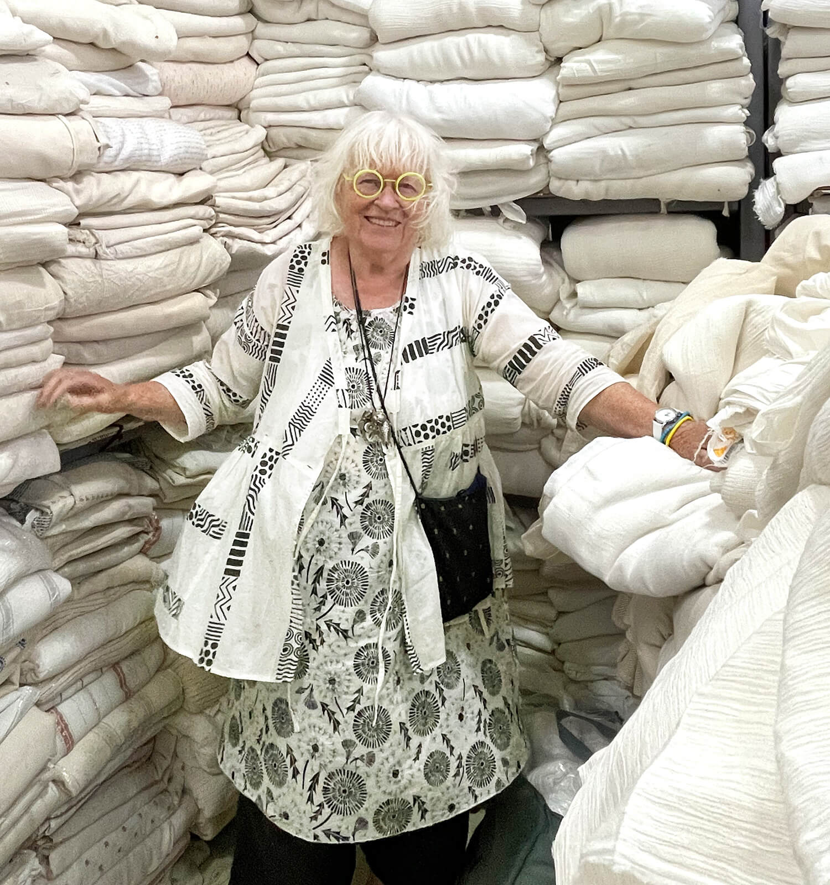

Gudrun Sjoden
Švedų mados dizainerė, kurianti spalvotus, išraiškingus is stilingus rūbus. Ji pati piešia raštus audiniams.
Gudrun Sjoden puslapisŠvedų mados dizainerė, kurianti spalvotus, išraiškingus is stilingus rūbus. Ji pati piešia raštus audiniams.
Gudrun Sjoden puslapis